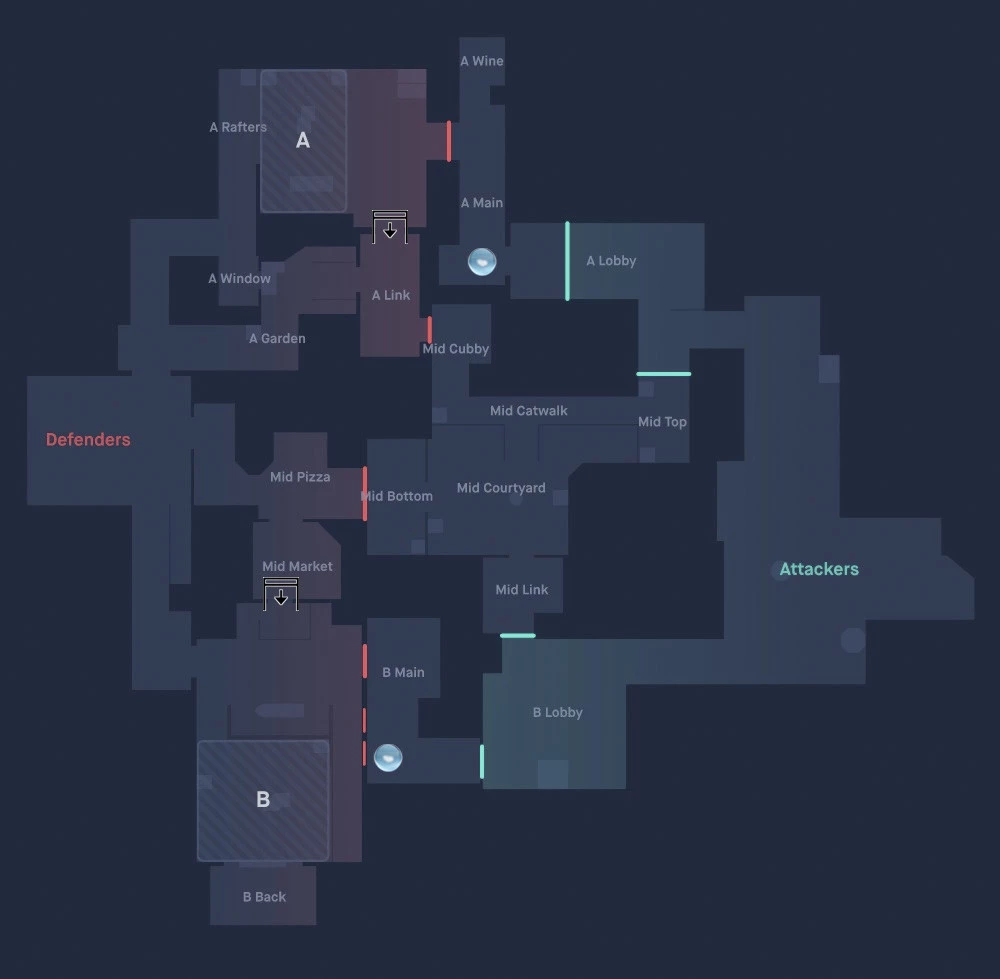

Conoce los mapas de Valorant
Cada mapa presenta una estructura diferente que modifica la forma de atacar, defender y controlar el espacio. Conocer sus zonas, accesos y posibilidades es fundamental para tomar mejores decisiones durante una partida.
Ascent
Ascent se caracteriza por tener una zona central muy importante para conectar ambos lados del mapa. Controlar Mid puede permitir al equipo atacar desde diferentes direcciones y generar presión sobre los defensores.
